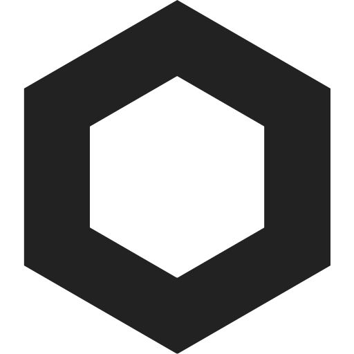

Bienvenido a NyxPawOS
By Nyx ✨
Bienvenido a NyxPawOS, el sistema operativo web mas astetik!
Solucion de problemas:
Si el boton de inicio no funciona:
- Asegurate de activar Javascript: Como activar Javascript
- Asegurate de permitir los PopUp en la configuracion del sitio
Si aparece una pantalla en negro con un texto y no hay ninguna barra de progreso:
- Asegurate de activar Javascript: Como activar Javascript
- Verifica que tengas la ultima version del sistema
- Investiga si alguien mas tiene el mismo problema
- Reinstala el sistema operativo y no modifiques los archivos si no sabes lo que haces
Si el sistema de archivos no funciona:
- Asegurate de activar Javascript: Como activar Javascript
- Asegurate que nada este bloqueando el acceso a local storage
Disfruta del OS!
Este sistema operativo esta basado en html y Javascript! No es un OS real! - Creado por nyx_waoss
Idioma original: Español ✨
Consola de desarrollador
Modo de recuperacion
NyxPawOS Launcher ✨ v1.1 2026